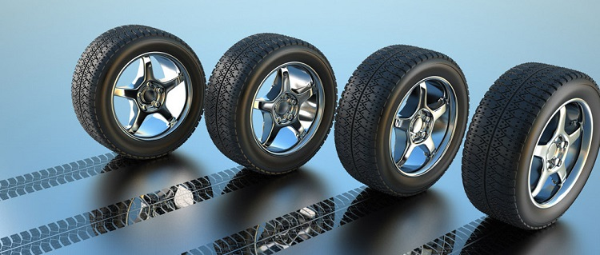

Со дня изобретения наполняемой воздухом шины, без которой сложно представить современный автомобиль, минуло свыше 160 лет. Первым официально зарегистрировал изобретение пневматической шины шотландец Роберт Уильям Томпсон.
В патенте № 10 990, датированным 10 июня 1846 года, написано: «Суть моего изобретения состоит в применении эластичных опорных поверхностей вокруг ободьев колес с целью облегчения движения и уменьшения шума, который они создают при движении». Хотя автомобиль появился позже, пневматическая шина сменила на колесах массивные литые резиновые так называемые грузоленты спустя годы после его рождения.
В 1888 г. идея пневматической покрышки появилась вновь. Новым изобретателем был тоже шотландец
Джон Бойд Данлоп , который и известен как автор пневматической шины. Чтобы трехколесный велосипед сына не портил садовых дорожек, Данлоп на колеса надел широкие обручи из шланга для поливки сада и надул их воздухом. Вскоре
Данлопу был выдан патент на изобретение. Достоинства пневматической шины оценили быстро. В 1889 году гонщик среднего уровня Уильям Хьюм выступил в гонках на велосипеде с пневматическими шинами и выиграл все три заезда, в которых участвовал. Коммерческое развитие изобретения началось с образования маленькой компании в Дублине в конце 1889 года под названием «Пневматическая шина и агентство Бута по продаже велосипедов». Ныне это Dunlop – одна из крупнейших фирм в мире по изготовлению шин. Вскоре англичанин Бартлетт и француз Дидье изобрели вполне удобные способы монтажа и демонтажа покрышек, что дало возможность применять пневматические шины на автомобилях.
Создатели первых пневматических шин едва ли могли мечтать о надежности и долговечности «обутых» колес. Примитивный протектор не имел рисунка и легко повреждался. Водители с недоверием глядели на «резиновое чудо». Первыми стали использовать пневматические шины на автомобилях французы Андре и Эдуард Мишлен, имеющие опыт в производстве велосипедных шин. За время гонки 1895 года «Париж – Бордо» братья двадцать два раза меняли шины на своем «Пежо». Несмотря на многочисленные проколы, автомобиль прошел 1200 км и достиг финиша своим ходом, в отличие от девяти других участников гонки. Это был первый успех.
В Британии уже в 1896 г. покрышками Dunlop был оснащен автомобиль «Ланчестер». С установкой пневматических шин улучшились плавность хода и проходимость, хотя первые шины были ненадежны и не приспособлены к быстрому монтажу. Через некоторое время в широком прокате появились-таки автомобили на пневматических шинах. По сравнению с предшественниками они обладали явными преимуществами в комфорте и скорости, но по-прежнему были ненадежны. Водители брали с собой в дорогу по шесть запасок и полный багажник инструментов, которыми пользовались по нескольку раз в день. Потребление шин с каждым днем росло, что сулило немалые прибыли первым шинным предприятиям – Dunlop, Michelin, Continental, Goodyear. Вскоре кто-то из шинников догадался, что поперечный рисунок протектора может улучшить сцепление машины с дорогой. Тогда же в резину стали добавлять сажу – вместо бело-желтого цвета шины обрели черный.
В первой четверти двадцатого века стали чаще использовать конструкции быстросъемных креплений колес к ступицам, что позволило заменять покрышки вместе с колесом в течение нескольких минут. Эти усовершенствования привели к повсеместному применению пневматических шин на автомобилях и бурному развитию шинной промышленности. Дальнейшие изобретения в этой области были, прежде всего, связаны с повышением безотказности и долговечности шин, а также с облегчением монтажа-демонтажа. Потребовалось много лет совершенствования конструкции и способа изготовления пневматической шины, прежде чем она окончательно вытеснила литую резиновую. Применялись все более надежные и долговечные материалы, появился в покрышках корд – особо прочный слой из упругих текстильных нитей.
Во время Первой мировой войны начались разработки конструкций шин для грузовых автомобилей и автобусов. Пионерами в этом отношении были США. К 1925 г. в мире насчитывалось порядка 4 млн. автомобилей с пневматическими шинами, т.е. практически весь парк, за некоторым исключением отдельных типов грузовиков. Количество компаний по производству покрышек резко увеличилось, многие из них существуют и сейчас, «Файрстоун» и «Гудрич» в США, «Континенталь», «Метцелер» в ФРГ, «Пирелли» в Италии. Вторая мировая война заставила принять ряд мер по использованию синтетического каучука (СК) вместо натурального.
Применение же СК в рецептуре шинных резин нашей страны относится еще к 1933 году, а к 1940 г. потребление СК в советских шинах достигло 73%. Благодаря специфическим свойствам СК и их влиянию на эксплуатационные характеристики шин появились перспективы создания новых типов усовершенствованных шин. Тем не менее за сорок лет с начала века радикальных изменений в конструкциях покрышек не происходило. Но в 1946 году специалисты Michelin изобрели шины радиальной конструкции со стальным кордом. Они более прочные и надежные, на них можно развивать большую скорость или стоять в пробках – радиальным шинам не повредит ни то ни другое. А главное, они тормозят хорошо!
В 1980-е годы появилась конструкция шины фирмы «Континенталь» с креплением на Т-образном ободе колеса, обеспечивающая безопасное движение на небольшой скорости даже при спущенных шинах. Дальнейшее усовершенствование покрышек идет и в направлении применения современных материалов, уменьшения содержания резины, повышения прочности корда, улучшения связи корда с резиной, создания шин с малой высотой, увеличения насыщенности рисунка и применения ребристых и комбинированных рисунков протектора. Усовершенствование шин направлено также на увеличение срока службы, допускаемых нагрузок, упрощения технологии производства, улучшения технико-экономических показателей, увеличения безопасности движения транспортных средств.
До недавнего времени наибольшее внимание уделялось улучшению конструкции обычных диагональных шин. За последние 20 лет вес таких шин уменьшился на 20-30%, грузоподъемность повысилась на 15-20%, срок службы увеличен на 30-40%, дисбаланс и биение шин уменьшены на 15%, повысились тягово-сцепные качества. Однако многие шинные компании считают ненужным в дальнейшем развивать работы по совершенствованию этих покрышек, так как их возможности почти полностью исчерпаны. Сегодня основное внимание уделяется развитию и совершенствованию радиальных шин как наиболее перспективных. Наиболее перспективными сейчас считаются радиальные бескамерные однослойные покрышки с металлокордом, предназначенные для монтажа на полуглубокие ободья – их выпускают и Pirelli, и Michelin, и Dunlop.
На рынке постоянно появляются новинки. Так, в 2000 году специалисты Michelin заявили, что готовы выпускать цветные шины для Формулы-1. А компания Kumho, специализирующаяся на изготовлении авто- и мотоаксессуаров, пошла еще дальше, предложив ароматические шины – они не пахнут резиной: меняя колесо, можно ощутить тонкий запах лаванды, жасмина или цитрусов. Это, конечно, ходы, рассчитанные на специфическую аудиторию, тогда как основные сражения шинных компаний идут за господство на рынке. На полях маркетинговых войн брендов и многообразия тестов статистика выводит свои сухие данные: самым популярной в мире маркой автомобильных шин является-таки Goodyear, а лидером этого рынка в России по-прежнему остается Bridgestone. Им уступили даже легендарный Dunlop с его правом открытия первых шин; Michelin с его неизменным символом – надувным человечком Бибендумом; аристократичный Pirelli, сумевший воплотить дух компании в таком, казалось бы, отвлеченном от их бизнеса деле, как ежегодный календарь, который неизменно становится эстетическим открытием наступающего года…
У шин есть и своя «книга рекордов». Самые большие шины в мире – это Bridgestone 59/ 80 R63 V-Steel E-Lug S и Michelin 59/80 R63 XDR для карьерных самосвалов грузоподъемностью до четырехсот тонн. Их размеры впечатляют – каждое достигает 4,02 метра в высоту, 1,47 метра в поперечнике, и весит 5,1 тонны. А самые маленькие шины – у микромодели от «Ниппонденсо» – действующей копии седана «Тойота АА» 1936 года. Оснащенная электромотором крохотная машинка насчитывает в длину около 4,8 мм, при этом диаметр колеса малютки – примерно 0,8 мм. Самые дорогие серийные шины – Pirelli Scorpion Zero, они изначально разрабатывались для внедорожника Lamborghini LM002. Их ориентировочная цена – около 900 долларов за покрышку. Среди более массовых шин для обычных легковых автомобилей на первой строке прайса – около 600 долларов – покрышки Michelin Pilot Sport. Самые скоростные шины, сертифицированные для движения по дорогам общего пользования, – Continental ContiSport Contact 2Vmax, предназначенные для езды на скорости до 360 км/ч.
Самые бесшумные шины, как считают специалисты и показывают различные замеры и тестирования, – это Yokohama серии AVS. Также высокими показателями акустического комфорта отличаются покрышки Pirelli P6 и Goodyear Eagle NCT-5. Самые экологически чистые шины выпускает Nokian Tires. В составе резиновой смеси своих покрышек компания полностью исключила полиароматические соединения, признанные вредными для окружающей среды. Вместо них Nokian использует смесь на рапсовом масле. Экологичность совсем не снижает ходовые качества шины, напротив – благодаря новой смеси достигается более низкий коэффициент сопротивления качению и улучшенное сцепление с дорогой. Самые низкопрофильные шины продемонстрировал Dunlop, укомплектовавший Opel Astra Coupe OPC X-treme покрышками 305/25-ZR20 на задней оси и 265/30-ZR20 на передних колесах. С ним спорит Continental со своим «атомным» 2Vmax, шинами которого оснащен заряженный Porsche Boxster. Не уступает и Pirelli, предлагая в гамме моделей Pzero Direzionale и Pirelli P Zero Assimetrico такие типоразмеры, как 355/25 R19 и 345/25 R20.
Самые индивидуальные шины предлагает компания Matador. Этот производитель предоставляет европейцам необычную услугу – нанесение на боковину шины промышленным способом любых надписей по желанию заказчика: названия корпорации, имени владельца машины или его жены (тещи), мудрого афоризма – короче, всего, что поместится, кроме нецензурных выражений. Надпись наносится вместо собственного названия компании. Самые футуристические шины предложил Michelin. Названные Tweel концептуальные колеса будущего ничего общего не имеют с обычными шинами. В профиль они напоминают велосипедные колеса и представляют собой пространственную конструкцию, целиком выполненную из резины, в которой гибкие «спицы» соединены с гибким «ободом».
Но среди этих изысков технологичности среднестатистического пользователя все же больше всего интересует, какой же марки выбрать покрышки на свой автомобиль. Понятно, что у мировых лидеров – производителей шин контроль качества одинаков в любой стране. Поэтому выбор среди них – исключительно прерогатива ваших вкусов и пристрастий.
Автор: Екатерина Тамбовцева (текст)
Еще немного об автомобильных шинах ...